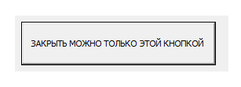
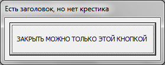

Tips_Macro_DontCloseFormOnMenu.xls (77,5 KiB, 519 скачиваний)
Tips_Macro_DontCloseFormOnMenu.xls (77,5 KiB, 519 скачиваний)Как убрать заголовок у UserForm VBA
Иногда при разработке интерфейсов программы с помощью форм пользователя(UserForm) бывает необходимо запретить закрытие формы крестиком. Причин много: например на форме много элементов выбора и пользователь не должен просто закрывать форму крестиком, не выбрав что-то конкретное. Или может форма должна висеть постоянно на листе до тех пор, пока программа не сделает все необходимые действия и т.д.
Варианта два
Вариант 1
Можно просто запретить закрывать форму. Это значит, что после нажатия на крестик ничего не произойдет. Для этого надо перейти в модуль формы и на событие QueryClose прописать такой код:
Private Sub UserForm_QueryClose(Cancel As Integer, CloseMode As Integer) If CloseMode = 0 Then 'CloseMode = 0 - попытка закрыть форму крестиком Cancel = True 'даем VBA понять, что надо отменить закрытие формы End If End Sub
данный код не даст закрыть форму нажатием на крестик, но если форма выгружается другими методами(вроде Unload) - форма закроется. За это отвечает параметр CloseMode, который может принимать следующие значения:
Можно(скорее даже нужно!) дать понять пользователю, что он должен сделать что-то конкретное для закрытия формы и что крестиком это сделать нельзя, чтобы он не нервничал и не пытался завершить работу Excel через Clt+Alt+Delete;
Private Sub UserForm_QueryClose(Cancel As Integer, CloseMode As Integer) If CloseMode = 0 Then 'CloseMode = 0 - попытка закрыть форму крестиком MsgBox "Вы должны нажать на кнопку в центре, чтобы закрыть форму", vbInformation, "www.excel-vba.ru" Cancel = True 'даем VBA понять, что надо отменить закрытие формы End If End Sub
Теперь при попытке закрыть форму крестиком пользователь увидит сообщение с инструкцией.
Вариант 2
Но порой надо не просто запретить закрывать форму - но и для эстетики убрать заголовок с крестиком вообще - чтобы не смущал пользователя. Здесь чуть посложнее - придется применить функции API. Код надо будет помещать уже на инициализацию формы(событие Initialize), а не на закрытие(QueryClose). Следующий код необходимо будет поместить в самое начало модуля той формы, меню которой требуется убрать(первой строкой или сразу после строк деклараций, таких как Option Explicit, Option Base, Option Compare Text):
'константы для функций API Private Const GWL_STYLE As Long = -16& 'для установки нового вида окна Private Const GWL_EXSTYLE = -20& 'для расширенного стиля окна Private Const WS_CAPTION As Long = &HC00000 'определяет заголовок Private Const WS_BORDER As Long = &H800000 'определяет рамку формы 'Функции API, применяемые для поиска окна и изменения его стиля #If VBA7 Then Private Declare PtrSafe Function SetWindowLong Lib "User32" Alias "SetWindowLongA" (ByVal hwnd As LongPtr, ByVal nIndex As Long, ByVal dwNewLong As LongPtr) As LongPtr Private Declare PtrSafe Function GetWindowLong Lib "User32" Alias "GetWindowLongA" (ByVal hwnd As LongPtr, ByVal nIndex As Long) As LongPtr Private Declare PtrSafe Function FindWindow Lib "User32" Alias "FindWindowA" (ByVal lpClassName As String, ByVal lpWindowName As String) As LongPtr Private Declare PtrSafe Function DrawMenuBar Lib "User32" (ByVal hwnd As LongPtr) As Long #Else Private Declare Function SetWindowLong Lib "User32" Alias "SetWindowLongA" (ByVal hwnd As Long, ByVal nIndex As Long, ByVal dwNewLong As Long) As Long Private Declare Function GetWindowLong Lib "User32" Alias "GetWindowLongA" (ByVal hwnd As Long, ByVal nIndex As Long) As Long Private Declare Function FindWindow Lib "user32.dll" Alias "FindWindowA" (ByVal lpClassName As String, ByVal lpWindowName As String) As Long Private Declare Function DrawMenuBar Lib "user32.dll" (ByVal hwnd As Long) As Long #End If
Это константы и функции API, которые и будут делать основную работу по удалению меню. Теперь останется на событие инициализации формы применить все эти функции:
Private Sub UserForm_Initialize() Dim ihWnd, hStyle 'ищем окно формы среди всех открытых окон If Val(Application.Version) < 9 Then ihWnd = FindWindow("ThunderXFrame", Me.Caption) 'для Excel 97 Else ihWnd = FindWindow("ThunderDFrame", Me.Caption) 'для Excel 2000 и выше End If 'получаем информацию о найденном окне(стили и т.д.) hStyle = GetWindowLong(ihWnd, GWL_STYLE) 'назначаем переменной новый стиль для окна формы hStyle = hStyle And Not WS_CAPTION And Not WS_BORDER 'изменяем вид окна: убираем меню(заголовок) и рамку SetWindowLong ihWnd, GWL_STYLE, hStyle SetWindowLong ihWnd, GWL_EXSTYLE, 0 'перерисовываем форму, точнее строку меню(заголовка) DrawMenuBar ihWnd 'меняем размер формы, т.к. сделали смещение элементов формы вверх на высоту заголовка Me.Height = Me.Height + GWL_EXSTYLE End Sub
Я постарался кратко описать действия с формой в комментариях, поэтому не буду дублировать это еще и отдельным текстом.
После этого кода форма получается более эстетичного вида:

С такой формой у пользователя точно не возникнет желания закрыть форму как-то в обход наших желаний. В коммерческих разработках такой подход будет более правильным. Однако здесь тоже есть недостаток: т.к. строка меню убирается полностью, то форму невозможно переместить при помощи мыши. В каких-то случаях это может мешать, а в каких-то наоборот быть преимуществом. Так или иначе это следует учитывать.
С легкой руки моего старого друга и модератора нашего форума ЮрияМ дополняю статью еще одним кодом. Если на запуск формы применить такой код:
Private Sub UserForm_Initialize() Dim ihWnd, hStyle 'ищем окно формы среди всех открытых окон If Val(Application.Version) < 9 Then ihWnd = FindWindow("ThunderXFrame", Me.Caption) 'для Excel 97 Else ihWnd = FindWindow("ThunderDFrame", Me.Caption) 'для Excel 2000 и выше End If 'получаем информацию о найденном окне(стили и т.д.) hStyle = GetWindowLong(ihWnd, -16&) 'убираем кнопку крестика SetWindowLong ihWnd, -16&, hStyle And Not &H80000 End Sub
То заголовок будет и можно будет форму за него хватать и перемещать, но крестика на форме вообще не будет:

Для этого кода так(же как и для предыдущего) в модуле формы необходимо разместить приведенные выше функции API.
ВАЖНО: Применяя любой из подходов советую заранее продумать как форма будет вообще закрываться, в том числе в режиме отладки программы. Т.к. если просто вставить этот код, то сами же не сможете закрыть форму - только завершением выполнения кода через Run -Reset.
Во вложении найдете все описанные варианты отображения форм:
Tips_Macro_DontCloseFormOnMenu.xls (77,5 KiB, 519 скачиваний)